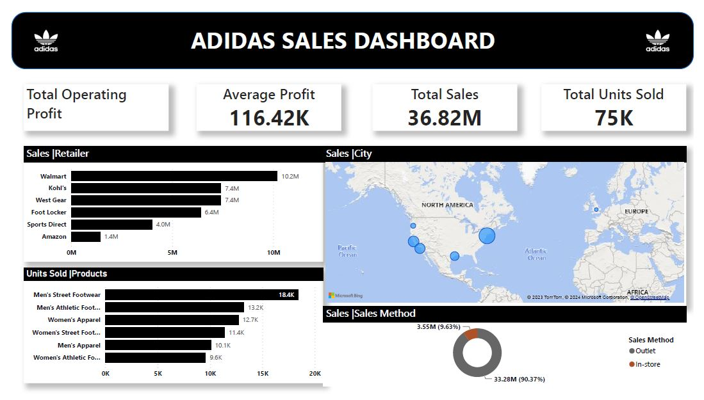
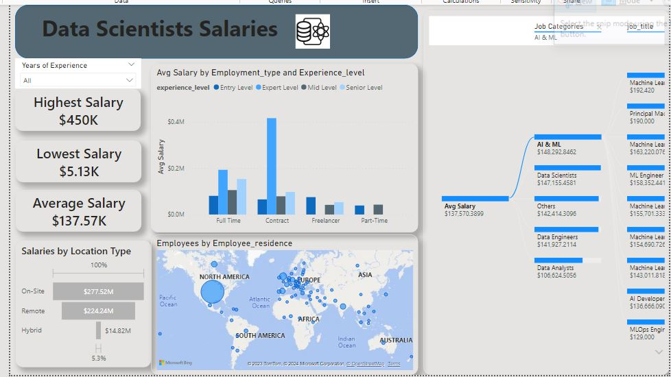

Products Sales Dashboard
In this report, we delve into Adidas sales data, aiming to extract valuable insights and trends. Through thorough analysis and visualization, we seek to uncover patterns in sales performance, customer preferences, geographic distribution, product trends, and any other pertinent factors that may influence Adidas's revenue. By examining this data, we aim to provide actionable insights that can inform strategic decisions, marketing campaigns, inventory management, and overall business strategies for Adidas. In my own YouTube channel, I uncover how to create this dashboard

Data Scientists Salaries Report
In this dataset exploration, we delve into the salaries of data scientists, extracting valuable insights from the collected data. Through comprehensive analysis and visualization techniques, we aim to uncover trends, patterns, and factors influencing data scientist salaries. By examining various aspects such as experience, education, location, and industry, we seek to provide actionable insights that can inform salary expectations, career decisions, and workforce strategies within the data science domain.In my own YouTube channel, I uncover how to create this dashboard

Chocolate Sales Dashboard
This Power BI project is meticulously designed to analyze the sales of chocolate products across various teams. It addresses a range of significant questions that the management may have about their company and products. By leveraging Power BI's capabilities, the project offers insightful visualizations and data-driven insights, empowering decision-makers to gain a comprehensive understanding of sales performance, identify trends, and make informed strategic decisions.

Updating Data in SQL:
This SQL query efficiently updates data from one table to another using a common field known as 'product ID,' which serves as a primary key. The query accomplishes this task without requiring explicit join operations, streamlining the update process. By leveraging the primary key relationship, it ensures the seamless transfer of data between the two tables, enhancing database management efficiency. Check out the code on my Github.